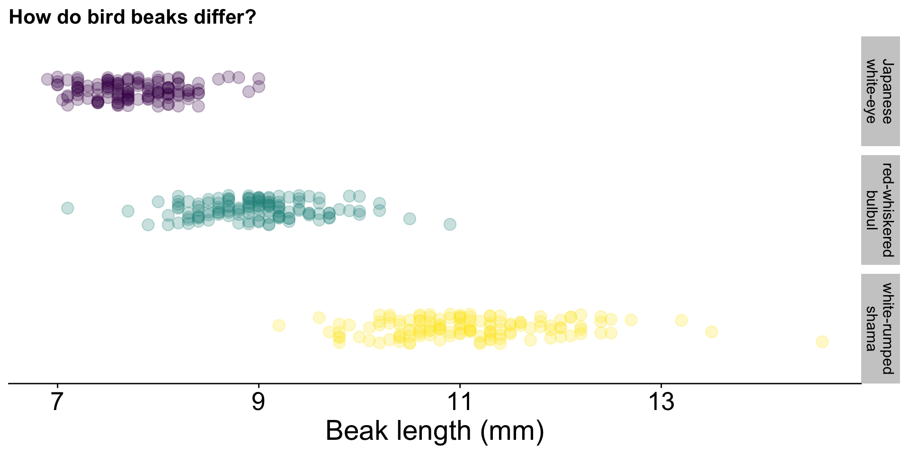
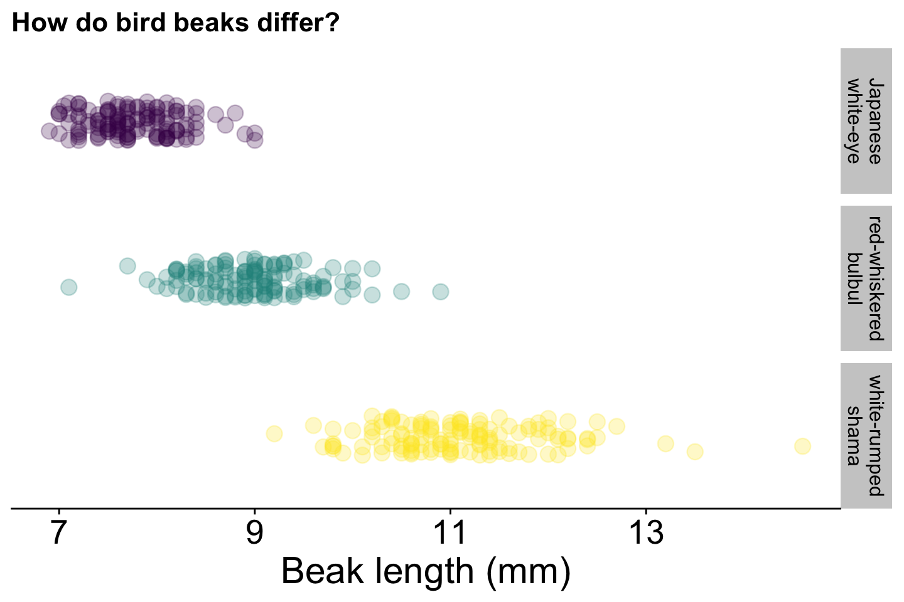
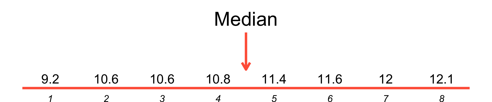
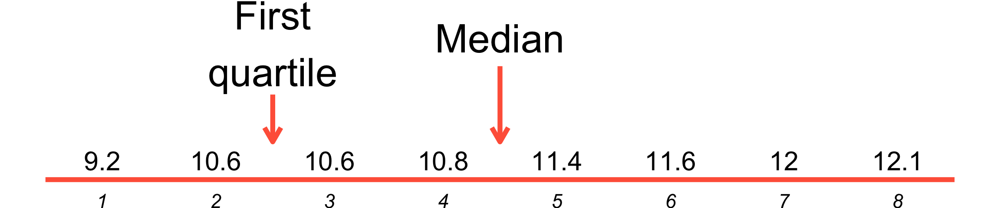
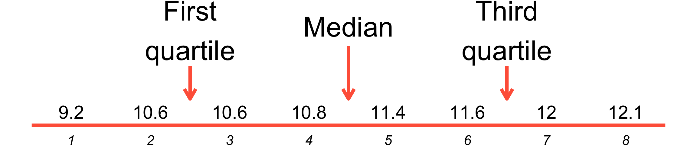

ʻokana
Managing Biocultural Resources for Abundance within Social-Ecological Regions in Hawaiʻi

Data from Gleditsch, J. M., & Sperry, J. H. (2020). Ecology and Evolution, 10(21), 12157-12169.
Japanese white-eye
red-whiskered bulbul
white-rumped shama
Images from Wikipedia
the Mean describes location
| Descriptor | Parameter | Estimate | Units |
|---|---|---|---|
| mean | \(\mu\) | \(\bar{Y}\) | measurement unit (e.g. cm, seconds, etc.) |
Notes:
In words:
The sample mean is the sum of all the observations in a sample divided by \(n\), the number of observations
In math:
\[\bar{Y} = \frac{\sum_{i = 1}^{n} Y_i}{n}\]
A subset of 8 white-rumped shama beak length measurements
| Beak lengths in mm |
|---|
| 10.8 |
| 9.2 |
| 12.0 |
| 11.4 |
| 12.1 |
| 10.6 |
| 10.6 |
| 11.6 |
Data from Gleditsch, J. M., & Sperry, J. H. (2020). Ecology and Evolution, 10(21), 12157-12169.
| i | \(Y_i\) |
|---|---|
| 1 | 10.8 |
| 2 | 9.2 |
| 3 | 12.0 |
| 4 | 11.4 |
| 5 | 12.1 |
| 6 | 10.6 |
| 7 | 10.6 |
| 8 | 11.6 |
the Standard Deviation describes spread
| Descriptor | Parameter | Estimate | Units |
|---|---|---|---|
| mean | \(\mu\) | \(\bar{Y}\) | measurement unit |
| standard deviation | \(\sigma\) | \(s\) | measurement unit |
Notes:
In words:
The standard deviation is a common measure of the spread of data. It indicates how far the different measurements are (on average) from the mean.
In math:
\[ \begin{aligned} s^2 &= \frac{\sum_{i = 1}^{n} (Y_i - \bar{Y})^2}{n - 1} \\ s &= \sqrt{s^2} \end{aligned} \]
\(s^2\) is the sample variance
Take square root to get standard deviation: \(\sqrt{s^2} = s\)
FAQ
Q1: Why does the sum of squared deviations (\(\sum_{i = 1}^{n} (Y_i - \bar{Y})^2\)) appear in the numerator?
A1: Negative and positive deviations have the same effect on average deviation. For example, suppose \(\bar{Y} = 0\):
\[(1 - 0) ^ 2 = (1) ^ 2 = 1\] \[(-1 - 0) ^ 2 = (-1) ^ 2 = 1\]
FAQ
Q2: Why use the sum of squared deviations rather than absolute deviations?
A2: The squared values turn out to have better statistical properties than absolute values.
FAQ
Q3: Why is it divided by \(n-1\) rather than \(n\)?
A3: Dividing by \(n\) is biased and underestimates the population standard deviation. Matters most when \(n\) is small.
A subset of 8 white-rumped shama beak length measurements
| Beak lengths in mm |
|---|
| 10.8 |
| 9.2 |
| 12.0 |
| 11.4 |
| 12.1 |
| 10.6 |
| 10.6 |
| 11.6 |
Remember: \(\bar{Y} =\) 11.04 mm
| \(i\) | \(Y_i\) | Deviations (\(Y_i - \bar{Y}\)) |
|---|---|---|
| 1 | 10.8 | 10.8 - 11.04 = -0.24 |
| 2 | 9.2 | |
| 3 | 12.0 | |
| 4 | 11.4 | |
| 5 | 12.1 | |
| 6 | 10.6 | |
| 7 | 10.6 | |
| 8 | 11.6 | |
| Sum | 88.3 |
By definition, sum of deviations equals 0
| \(i\) | \(Y_i\) | Deviations (\(Y_i - \bar{Y}\)) |
|---|---|---|
| 1 | 10.8 | -0.24 |
| 2 | 9.2 | -1.84 |
| 3 | 12.0 | 0.96 |
| 4 | 11.4 | 0.36 |
| 5 | 12.1 | 1.06 |
| 6 | 10.6 | -0.44 |
| 7 | 10.6 | -0.44 |
| 8 | 11.6 | 0.56 |
| Sum | 88.3 | 0.00 |
Sum of squared deviations is always positive
| \(i\) | \(Y_i\) | Deviations (\(Y_i - \bar{Y}\)) | Squared deviations \((Y_i - \bar{Y})^2\) |
|---|---|---|---|
| 1 | 10.8 | -0.24 | \((-0.24)^2\) = 0.0576 |
| 2 | 9.2 | -1.84 | |
| 3 | 12.0 | 0.96 | |
| 4 | 11.4 | 0.36 | |
| 5 | 12.1 | 1.06 | |
| 6 | 10.6 | -0.44 | |
| 7 | 10.6 | -0.44 | |
| 8 | 11.6 | 0.56 | |
| Sum | 88.3 | 0.00 |
Sum of squared deviations is always positive
| \(i\) | \(Y_i\) | Deviations (\(Y_i - \bar{Y}\)) | Squared deviations \((Y_i - \bar{Y})^2\) |
|---|---|---|---|
| 1 | 10.8 | -0.24 | 0.0576 |
| 2 | 9.2 | -1.84 | 3.3856 |
| 3 | 12.0 | 0.96 | 0.9216 |
| 4 | 11.4 | 0.36 | 0.1296 |
| 5 | 12.1 | 1.06 | 1.1236 |
| 6 | 10.6 | -0.44 | 0.1936 |
| 7 | 10.6 | -0.44 | 0.1936 |
| 8 | 11.6 | 0.56 | 0.3136 |
| Sum | 88.3 | 0.00 | 6.3188 |
\[s^2 = \frac{\sum_{i = 1}^{n} (Y_i - \bar{Y})^2}{n - 1} = \frac{6.3188}{7} = 0.9027~\mathrm{mm}^2\]
\[s = \sqrt{0.9027} = 0.9501~\mathrm{mm}\]
The standard deviation has the same units as the measurements (mm in this case), so you can describe the departure from the mean in a consistent way.
“Almost 95% of data typically fall within two standard deviations of the mean”
Coefficient of Variation is standard deviation as a percentage of the mean
| Descriptor | Parameter | Estimate | Units |
|---|---|---|---|
| mean | \(\mu\) | \(\bar{Y}\) | measurement unit |
| standard deviation | \(\sigma\) | \(s\) | measurement unit |
| variance | \(\sigma^2\) | \(s^2\) | measurement unit\(^2\) |
| coefficient of variation | \(\sigma/\mu \times 100\%\) | CV | percent (%) |
Note: CV is useful for comparing data with different measurement units
In words:
The coefficient of variation is the standard deviation expressed as a percentage of the mean
In math:
\[\mathrm{CV} = \frac{s}{\bar{Y}} \times 100\%\]
A subset of 8 white-rumped shama beak length measurements
| Beak lengths in mm |
|---|
| 10.8 |
| 9.2 |
| 12.0 |
| 11.4 |
| 12.1 |
| 10.6 |
| 10.6 |
| 11.6 |
Data from Gleditsch, J. M., & Sperry, J. H. (2020). Ecology and Evolution, 10(21), 12157-12169.
\[\mathrm{CV} = \frac{s}{\bar{Y}} \times 100\% = \frac{0.9501}{11.04} \times 100\% = 8.61 \%\]

| Species | \(\bar{Y}\) | \(s\) | CV |
|---|---|---|---|
| Japanese white-eye | 7.76 | 0.45 | 5.74% |
| red-whiskered bulbul | 8.97 | 0.57 | 6.35% |
| white-rumped shama | 11.09 | 0.83 | 7.44% |
Note: statistics for all data (not subset of 8)
The mean and the spread increase together. This is common for morphological data.
| Descriptor | Parameter | Estimate | Units |
|---|---|---|---|
| median | Median | \(M\) | measurement unit |
Notes:
If \(n\) is odd:
\[\text{Median} = Y_{\left(\frac{n+1}{2}\right)}\] If \(n\) is even:
\[\text{Median} = \frac{Y_{\left(\frac{n}{2}\right)} + Y_{\left(\frac{n}{2} + 1\right)}}{2}\]

\[ \begin{align} n &= 8 \text{ (even)} \\ \text{Median} = \frac{Y_4 + Y_5}{2} &= \frac{10.8 + 11.4}{2} = 11.10~\text{mm} \end{align} \]
| Descriptor | Parameter | Estimate | Units |
|---|---|---|---|
| median | Median | \(M\) | measurement unit |
| interquartile range | Interquartile range | \(IQR\) | measurement unit |
Notes:

\[ \begin{align} j &= 0.25 n = 0.25 \times 8 \\ &= 2 \\ \text{First quartile} &= \frac{Y_2 + Y_3}{2} = \frac{10.6 + 10.6}{2} = 10.60~\text{mm} \end{align} \]

\[ \begin{align} k &= 0.75 n = 0.75 \times 8 \\ &= 6 \\ \text{Third quartile} &= \frac{Y_{6} + Y_{7}}{2} = \frac{11.6 + 12}{2} = 11.80~\text{mm} \end{align} \]
\[\text{Interquartile range} = \text{Third quartile} - \text{First quartile} = 1.20~\text{mm}\]
\[\mathit{IQR} = 11.80 - 10.60 = 1.20~\text{mm}\]
| Descriptor | Parameter | Estimate | Units |
|---|---|---|---|
| proportion | proportion | \(\hat{p}\) | probability |
In words:
The sample proportion is a measure of the location of categorical data. It indicates how frequently a specific category is found in the data.
In math:
\[ \hat{p} = \frac{N_{[Y = \text{category}]}}{n} \]
Note: the sample proportion is similar to the sample mean
Heads or tails?
H T T T H H T H T T
\[ N_{[Y = \text{tails}]} = 6 \]
\[ n = 10 \] \[ \hat{p}_\text{tails} = 0.6 \]
source: kaainamomona.org
E hō mai ka ʻike mai luna mai ē
O nā mea huna noʻeau o nā mele ē
E hō mai
E hō mai
E hō mai ē
When data are roughly symmetrical and there are not many extreme values
When data are skewed and/or there are many extreme values